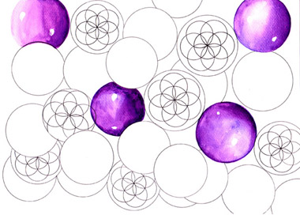

12. I can stay "here" forever
This is a picture with open eyes. The room is filled with contoured white transparent balls. They constantly vibrate. Within each ball there are seven smaller ones, which vibrate as well, at a high speed. Everything is alive! The blue-purple balls are "full", glossy and dominate the room, or more precisely the field, which also vibrates with them. |
 |
It's a perfect geometric shape. Endless beauty. Time has stopped. I can stay "here" forever, where neither space nor time exist. |
|
 |
The configuration I see is exactly the same as one of those illustrated in the book that I got a hold of shortly after viewing these spheres. I present it on the left. Geometrical patterns have appeared in the fields of England and with their appearance Master Jonah spoke about them to Hossca Harrison. The messages were presented by Ioanna Golfinopoulou in the book "The Prophecy of the Blue Light". |
The coincidences become more and more frequent towards significant and healing discoveries: again I found the same figure in Leadbeater's book entitled "The chakras, A Monograph". There he drew what he saw that existed everywhere in space and verbally describes the motion it makes, which is called spin in Physical Science. |
|
What we see on the right is the display of the spherule of vitality: a circle that includes seven circles within it, in an absolute geometrical configuration. The pattern I see is circles that have seven more circles inside them. One of the patterns in the fields of England is a circle with seven circles inside. I have the feeling that all these interconnect. |
 |
In the illustrated edition of the book of contemporary Physical Scientist Stephen Hawking "A brief history of time", I read in the chapter "The unification of physical theories" about the hyperparticles and their movements. They're depicted as spherules and their movement, or spin, is the same as the one I see. Only under very special circumstances are the hyperparticles visible and certainly not with the powerful microscopes under normal conditions, because they diffuse. In Greece, at Pylos, where the deepest point of the Mediterranean Sea is found, a globally unique experiment is held: only at that depth can the neutrinos (particles that penetrate matter and are found everywhere in the universe), be measured and their behaviour examined, because on the surface of the Earth the presence of other cosmic radiation prevents their detection. Perhaps from Pylos, from 4,000 meters under the sea, from the experiment called "King Nestor", may the final answer come for the unification of all physical theories, of all knowledge ... Knowledge is waiting for us to discover it. |
|
{kind=link}